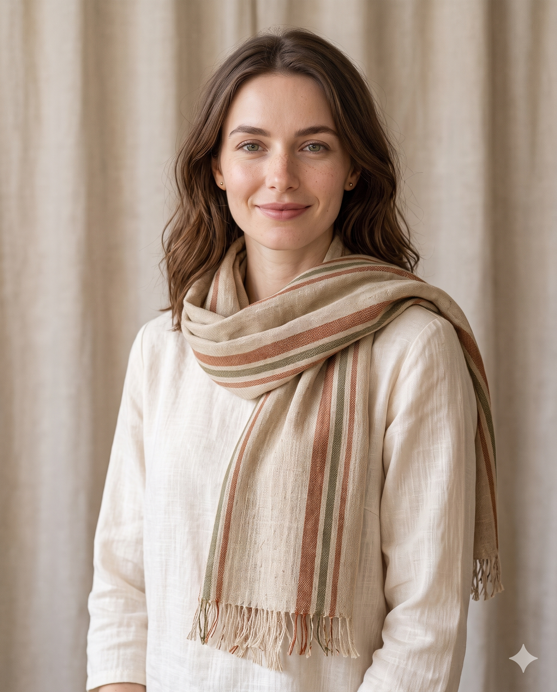
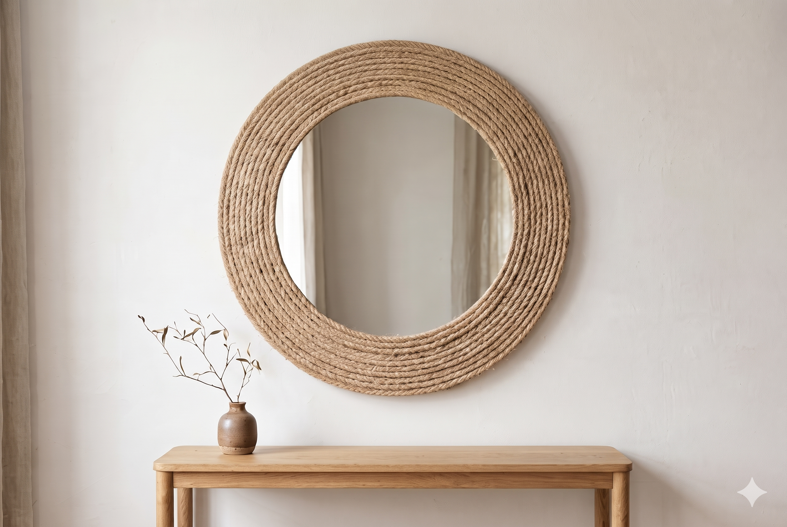

Fashion
Airy wearables made with natural jute fibre, sometimes blended with cotton or silk for softness and drape.
Every JuteOrb craft is made from natural jute by skilled artisans or trusted manufacturers, and chosen for quality, finish and durability.
Product details and current availability

Airy wearables made with natural jute fibre, sometimes blended with cotton or silk for softness and drape.

Earthy pieces that add warmth and texture to a room. Jute's natural resilience makes each piece a lasting companion.

Plastic-free office and desk essentials for a considered workspace.

Lightweight, handwoven jewellery with a distinctive natural look, made for comfortable wear.

Strong, roomy and elegant bags: a durable alternative to plastic and synthetic options.